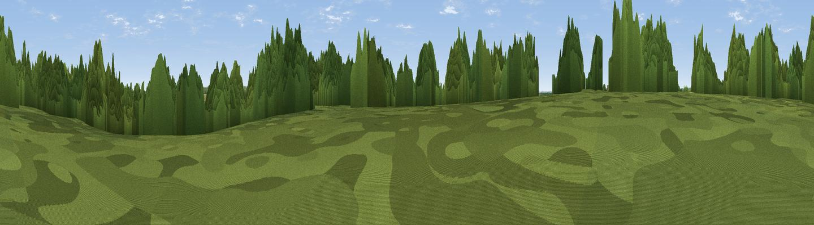

White Hill
#43356 in England · top 85% of its area beats it · near Ashe · access?Where it is
The exact computed spot (SU 52773 47912). Click the marker for map links.
Public access: no public right of way or access land is recorded at this exact spot — it may be on private land. Computed from Natural England's CRoW access layer and OpenStreetMap rights of way — not the legal definitive map. Always verify locally.
The view, rendered

A 360° render of this exact spot computed from the terrain model, tree cover and land cover — summer colours, afternoon light, calibrated against photographs of famous viewpoints. Real trees, hedges and buildings will differ in detail.
The panorama
Grey silhouette: terrain skyline in each direction (720 bearings, Earth curvature and refraction included). Dashed green: skyline with trees (+15 m) and buildings (+8 m) as obstacles. Blue strip: how far the ground is visible on each bearing.
Where the view opens
Wedge length = distance to the farthest visible ground on that bearing (vegetation-aware). Rings at 10, 25 and 50 km.
What fills the view
39% woodland · 32% cropland · 29% grassland
Angular shares of the visible panorama (visual magnitude), not map area. Landscape diversity 0.48 (0–1 Shannon).
Key numbers
More beautiful places nearby
The staircase of upgrades: each row has a higher view potential than everything closer. Driving times are estimates from straight-line distance, calibrated against real road routing — check an actual route before setting out.
| Place | Direction | Drive | Score |
|---|---|---|---|
| Viewpoint near North Waltham | SE · 4 km | ~9 min | 34.0 |
| Knowle Clump | W · 5 km | ~11 min | 41.7 |
| Tidbury Rings | SW · 8 km | ~17 min | 44.8 |
| Cottington's Hill | N · 9 km | ~17 min | 65.0 |
| Viewpoint near Ecchinswell | NNW · 9 km | ~18 min | 65.7 |
| Watership Down | NNW · 9 km | ~19 min | 71.4 |
| Beacon Hill | NW · 12 km | ~22 min | 76.7 |
| Viewpoint near Buriton | SE · 34 km | ~51 min | 80.0 |
51.22797, -1.24561 · source: osm peak · position refined by local search. Computed location — check access rights before visiting.